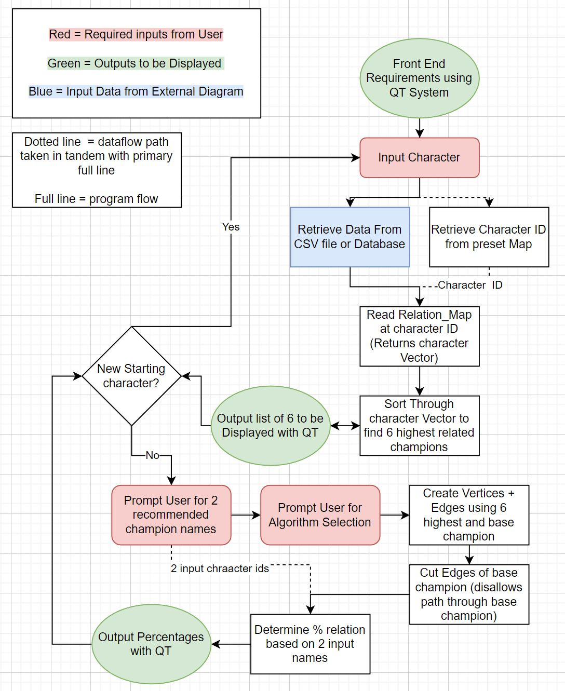
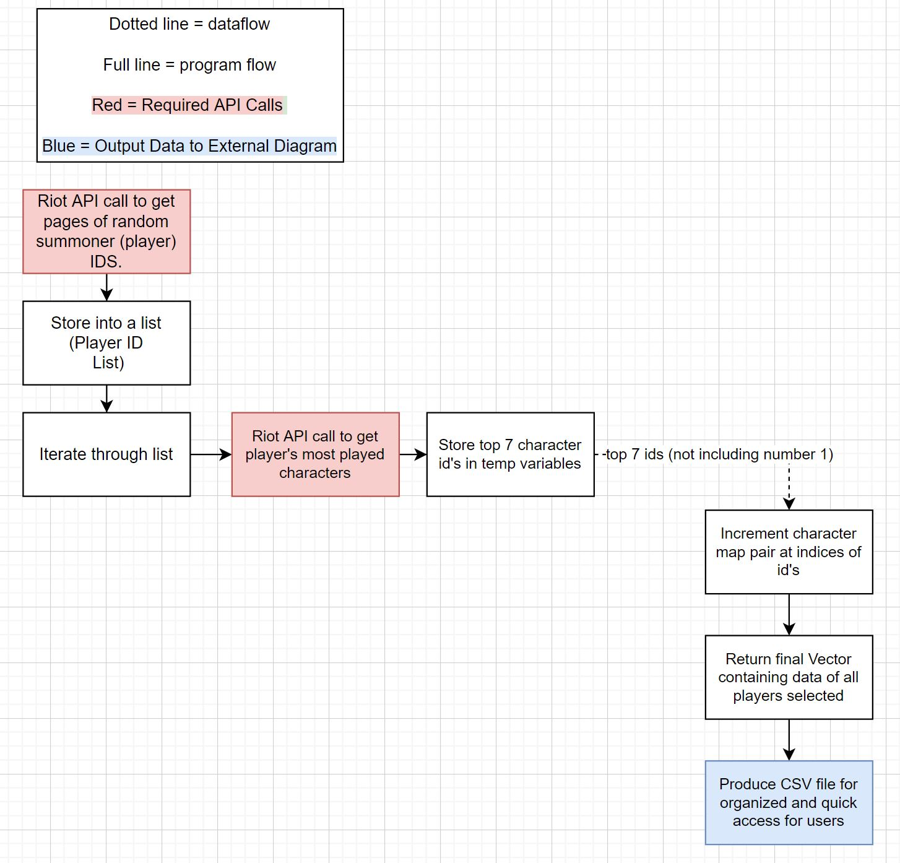

Image Examples
Knowing the target user and what they are used to is a key element in well designed products.
Because the target users are players to League of Legends and likely players of other games, making the display showcase similar to how RIOT showcases their skins makes it intuitive to see.
Workflow Diagrams
Throughout the development process I've always found it important to use diagrams to clearly showcase my thoughts either teammates or myself in the future
LOL44 can be split whollistically into two parts. The first is the upperlevel system that runs when the user is present. The second is the generation of the csv database (*ran only by us as developers or an automated system*) to limit users' loading times.
The diagram directly below relates to the upperlevel system that the user comes directly into contact with. It describes what the user will input , what goes on behind the scenes, and what comes out.
The second diagram below demonstrates the steps taken for the developer or automated system in order to generate an dataset for the character relationships. Since RIOT GAMES limits the amount of API calls able to be cast by a single developer key , the system takes and extended period of time to run. The solution I created for beta development was to run the data collection method once and store it in an organized way (in a list shown below).
